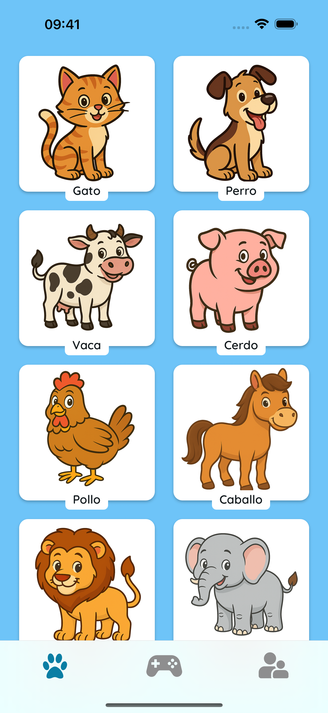
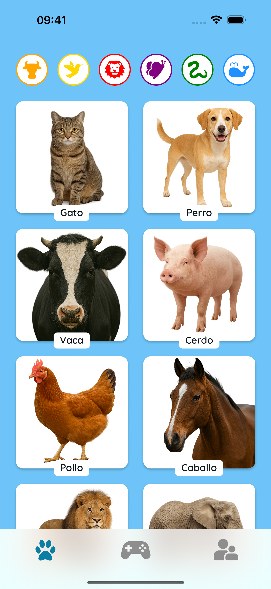
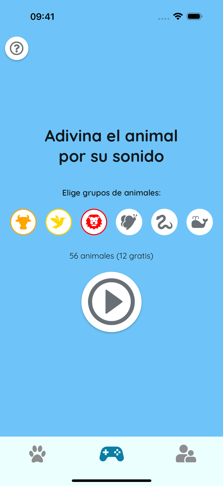
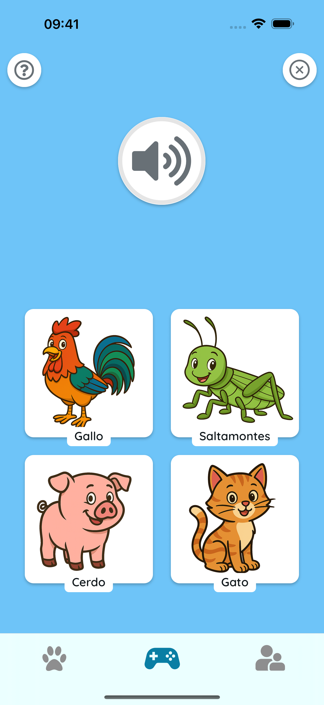

🎵 Aprende Escuchando
¡Toca los animales para escuchar sonidos reales! Perfecto para el desarrollo temprano del habla, la memoria y momentos familiares divertidos.
 🧠 Juega y Adivina
¡Escucha con atención y elige el animal correcto! Un modo de quiz simple ayuda a los niños a aprender a reconocer sonidos y recordar animales fácilmente.
 🌍 Seguro y Amigable para Niños
Sin anuncios. Sin seguimiento. Solo animales coloridos, sonidos amigables y tiempo de aprendizaje feliz juntos.